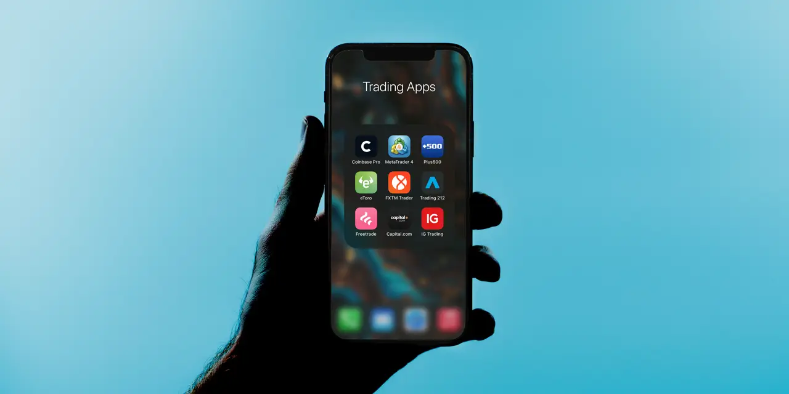

로빈후드 주주가 지금 가장 궁금해할 질문은 “비트코인이 다시 오르면 주가도 같이 오르느냐”가 아닙니다. 더 중요한 질문은 거래가 뜨거운 달이 지나도 고객 돈이 로빈후드 안에 남고, 그 돈이 구독, 마진 대출, 현금 예치, 이벤트 계약, 퇴직계좌 같은 반복 수익으로 바뀌느냐입니다. 로빈후드는 더 이상 무료 주식 거래 앱 하나로만 설명하기 어려운 회사가 됐습니다. 그러나 그만큼 확인해야 할 숫자도 많아졌습니다.
로빈후드의 2026년 1분기 실적 발표를 보면 좋은 숫자와 불편한 숫자가 같이 보입니다. 총순매출은 10억 6,700만 달러로 전년 대비 15% 늘었고, 순이익은 3억 4,600만 달러였습니다. 순입금은 177억 달러였고, 이는 전 분기 말 총 플랫폼 자산 대비 연율 22% 성장률에 해당합니다. Gold 가입자는 430만 명으로 전년 대비 36% 늘었습니다. 겉으로는 고객 활동과 수익화가 같이 커진 분기입니다.
하지만 같은 발표에서 크립토 매출은 전년 대비 47% 줄어 1억 3,400만 달러였습니다. 반면 옵션 매출은 2억 6,000만 달러, 주식 매출은 8,200만 달러, 이벤트 계약이 포함된 기타 거래 매출은 1억 4,700만 달러까지 커졌습니다. 이 숫자는 로빈후드가 크립토 거래소처럼 움직이는 구간과 종합 브로커처럼 움직이는 구간이 동시에 있다는 뜻입니다. 주주는 그래서 거래량 하나만 보지 말고, 고객 돈의 체류 시간과 수익 경로를 함께 봐야 합니다.
순입금은 앱 충성도를 보여주는 첫 숫자

브로커리지 회사에서 순입금은 단순한 예금 증가가 아닙니다. 고객이 다른 곳으로 돈을 빼지 않고 계속 맡긴다는 신호입니다. 로빈후드는 1분기 총 플랫폼 자산이 3,070억 달러로 전년 대비 39% 늘었다고 밝혔습니다. 4월에는 이 숫자가 더 커졌습니다. 4월 월간 운영 지표에서 총 플랫폼 자산은 3,454억 달러였고, 4월 순입금은 60억 달러였습니다. 12개월 순입금은 670억 달러로 제시됐습니다.
이 숫자가 중요한 이유는 로빈후드의 약점으로 꼽히던 “젊은 고객의 단기 거래 앱” 이미지를 바꿀 수 있기 때문입니다. 고객 돈이 커지면 회사는 거래 수수료성 매출만이 아니라 현금 잔고, 마진 대출, 증권 대여, 퇴직계좌, 자문형 상품, 신용카드, 은행 서비스로 수익 경로를 넓힐 수 있습니다. 같은 1명의 고객이라도 앱을 가끔 여는 고객과 월급, 퇴직계좌, 투자 자금을 모두 묶는 고객의 가치는 다릅니다.
다만 순입금은 시장 상승 효과와 구분해야 합니다. 총 플랫폼 자산은 고객이 새로 넣은 돈뿐 아니라 주식·코인 가격 상승에도 커집니다. 그래서 순입금 자체, 기존 고객의 평균 잔고, 신규 고객의 첫 입금 규모, 이탈 고객 비율을 같이 봐야 합니다. 로빈후드가 정말 자산 플랫폼이 되려면 고객이 거래가 뜨거울 때만 돈을 넣는 것이 아니라, 조용한 시장에서도 잔고를 유지해야 합니다.
여기서 찰스 슈왑과 인터랙티브 브로커스가 좋은 비교 대상입니다. 찰스 슈왑은 2026년 1분기 말 고객 자산이 11조 7,700억 달러에 달한다고 밝혔고, 인터랙티브 브로커스는 고객 자산 7,894억 달러와 고객 계좌 475만 개를 제시했습니다. 로빈후드는 아직 규모 면에서 슈왑과 다르고, 전문 트레이더 기반에서는 인터랙티브 브로커스와 다릅니다. 대신 젊은 고객과 모바일 경험에서 강점이 있습니다. 이 강점이 장기 자산 잔고로 이어지는지가 핵심입니다.
Gold와 마진은 반복 수익이지만 리스크도 같이 커집니다
관련 영상
금리 우려와 비트코인 하락 속 로빈후드를 분석하는 한국어 롱폼 영상
Gold 구독은 로빈후드가 단순 거래 앱에서 벗어나는 데 가장 중요한 제품입니다. 1분기 Gold 구독 매출은 5,000만 달러로 전년 대비 32% 증가했습니다. 가입자 430만 명은 유료 고객 기반이 실제로 커지고 있다는 신호입니다. 구독 수익은 거래량이 줄어도 매달 들어오기 때문에 투자자가 좋아하는 매출입니다. 문제는 이 구독이 “할인된 기능 묶음”으로 남는지, 아니면 고객이 더 큰 잔고와 더 많은 상품을 쓰게 만드는 출발점이 되는지입니다.
로빈후드는 Gold 안에 높은 예치금 이자, 마진 금리 혜택, 카드와 뱅킹, 자문형 상품, 리서치 기능을 붙이고 있습니다. 회사는 로빈후드 뱅킹이 12만 5,000명 이상 고객에게서 20억 달러 넘는 예금을 모았고, 로빈후드 Strategies는 28만 5,000명 이상 고객과 16억 달러 넘는 운용자산을 기록했다고 설명했습니다. 이 숫자는 아직 회사 전체 플랫폼 자산에 비하면 작지만, 로빈후드가 고객의 생활 금융 영역으로 들어가려는 방향을 보여줍니다.
마진 대출은 더 민감합니다. 1분기 마진 장부는 170억 달러로 전년 대비 93% 증가했고, 4월 말에는 180억 달러로 더 늘었습니다. 마진 대출은 금리와 고객 활동이 맞으면 이자수익을 키워 줍니다. 1분기 순이자수익은 3억 5,900만 달러로 전년 대비 24% 늘었습니다. 그러나 마진은 상승장에서는 좋은 수익원이지만, 급락장에서는 담보 부족, 강제 청산, 신용손실, 고객 불만을 함께 만들 수 있습니다.
그래서 로빈후드 주식을 볼 때 Gold와 마진을 무조건 좋은 숫자로만 읽으면 안 됩니다. 구독은 낮은 이탈률과 높은 부가 상품 전환율이 있어야 가치가 커지고, 마진은 고객 신용 리스크와 시장 변동성을 관리해야 수익으로 남습니다. 특히 로빈후드는 젊은 고객과 활동적인 트레이더 비중이 높아 시장 분위기에 민감합니다. 좋은 분기에는 레버리지 수요가 빠르게 늘 수 있지만, 나쁜 분기에는 그 속도가 비용으로 돌아올 수 있습니다.
크립토와 이벤트 계약은 성장보다 변동성을 먼저 봐야 합니다
로빈후드의 크립토 사업은 여전히 주가를 크게 흔듭니다. 1분기 크립토 명목 거래량은 660억 달러였고, 이 중 로빈후드 앱 거래량은 240억 달러였습니다. 다만 로빈후드 앱 기준 크립토 거래량은 전년 대비 48% 감소했습니다. 4월에도 전체 크립토 명목 거래량은 119억 달러로 3월보다 33% 줄었습니다. 비트스탬프가 포함되면서 전체 숫자는 커질 수 있지만, 앱 자체의 크립토 활동은 시장 가격과 투자심리에 크게 흔들립니다.
크립토 매출이 줄었는데도 총매출이 늘어난 것은 로빈후드에게 긍정적인 변화입니다. 회사가 옵션, 이벤트 계약, 순이자수익, Gold, 뱅킹, 자문형 상품으로 수익원을 넓히고 있기 때문입니다. 그러나 이 변화가 완성됐다고 보기는 이릅니다. 이벤트 계약은 1분기 88억 건으로 기록적인 수준이었고, 4월에도 32억 건이 거래됐습니다. 숫자는 크지만, 규제와 상품 설계, 고객 보호, 시장 조성 구조가 아직 성숙한 영역이라고 단정하기 어렵습니다.
이벤트 계약은 로빈후드가 활성 트레이더를 붙잡는 데 도움이 됩니다. 다만 금융 플랫폼에서 새로운 거래 상품이 빠르게 커질 때는 항상 두 가지 질문이 따라옵니다. 첫째, 고객이 반복적으로 쓰면서도 손실과 불만이 과도하게 커지지 않는가입니다. 둘째, 규제기관이 같은 상품을 도박, 파생상품, 예측시장 중 어디에 가깝게 보느냐입니다. 로빈후드는 혁신 속도가 강점이지만, 금융회사는 빠른 출시 뒤에 감당해야 할 규제 비용도 큽니다.
코인베이스와 비교하면 차이가 더 선명합니다. 코인베이스는 크립토 인프라와 거래소 성격이 강하고, 로빈후드는 주식·옵션·현금·마진·카드·은행 서비스를 묶는 모바일 금융 앱에 가깝습니다. 그래서 크립토 가격이 오를 때 둘 다 수혜를 받을 수 있지만, 로빈후드의 장기 가치는 크립토 매출만으로 정해지지 않습니다. 오히려 크립토 매출이 약한 분기에도 순입금과 Gold, 순이자수익이 버티는지가 더 중요합니다.
다음 분기 주주가 확인할 네 가지 질문
첫 번째 질문은 순입금이 계속 강한가입니다. 4월 순입금 60억 달러는 좋은 출발이지만, 세금 납부와 시장 변동성이 지나간 뒤에도 같은 흐름이 유지되는지 봐야 합니다. 총 플랫폼 자산이 오르는 것만으로는 부족합니다. 고객이 실제로 새 돈을 넣고, 다른 브로커로 옮기지 않고, 퇴직계좌와 뱅킹까지 확장하는지가 중요합니다.
두 번째 질문은 Gold 가입자의 질입니다. 가입자 수가 늘어도 고객이 단순히 예치금 이자 혜택만 받고 머문다면 수익성은 제한될 수 있습니다. Gold 가입자가 카드, 마진, 자문형 상품, 은행 서비스로 자연스럽게 이동해야 플랫폼 가치가 커집니다. 다음 실적에서는 Gold 가입자 수보다 Gold 고객의 평균 잔고, 상품 교차 사용, 구독 매출 증가율을 함께 보는 편이 좋습니다.
세 번째 질문은 마진과 신용손실의 균형입니다. 마진 장부가 빠르게 늘면 순이자수익은 좋아집니다. 하지만 시장이 흔들리면 마진 대출은 고객 손실과 회사 리스크를 동시에 키울 수 있습니다. 1분기 신용손실 충당금은 3,600만 달러로 전년 대비 늘었습니다. 아직 큰 문제라고 단정할 숫자는 아니지만, 마진 성장률이 높을수록 충당금과 고객 담보 안정성도 같이 봐야 합니다.
네 번째 질문은 비용 증가입니다. 회사는 2026년 조정 영업비용과 주식보상비 전망을 27억~28억 2,500만 달러로 제시했습니다. 신규 상품, 인수, 글로벌 확장, 트럼프 계좌 앱 구축, 인공지능 기능, 고객 지원은 모두 성장의 재료이지만 비용도 만듭니다. 로빈후드가 좋은 회사가 되려면 제품 출시 속도만 빠른 것이 아니라, 그 제품들이 고객 잔고와 반복 매출을 충분히 키워 비용 증가를 이겨야 합니다.
결론적으로 로빈후드는 단순히 비트코인 가격에 기대는 주식이 아닙니다. 순입금, Gold, 마진, 현금성 잔고, 이벤트 계약, 해외 확장, 자문형 상품이 동시에 붙으면서 더 큰 금융 플랫폼으로 이동하고 있습니다. 다만 이동 중인 회사는 늘 양쪽 얼굴을 가집니다. 성장 숫자는 매력적이고, 수익 구조는 더 넓어졌지만, 거래량 변동성·규제·마진 리스크·비용 증가도 같이 커졌습니다. 주주는 다음 분기부터 로빈후드를 “거래 앱”으로만 볼 것이 아니라, 고객 돈이 오래 머무는 금융 플랫폼으로 바뀌는지 확인하는 순서로 읽는 편이 좋습니다.